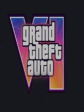

L2-L3 · Anticipation
For the last thirteen years, millions of men and women around the world have awaited the next GTA installment. A game series that most of us grew up loving and spending hundreds, if not thousands of hours playing; it's no secret that the response to the arrival of this game is massive. It's predecessor, Grand Theft Auto 5, has surmounted over 230 million copies since its September 2013 release, a number topped only by one other game, Minecraft. From an official U.S. Army platoon using time off to play the game as an incentive for soldiers to reenlist, to $1.3 billion in pre-order sales before release day. The social media world has turned on it's head; every man between the ages of 18 and 45 is only talking about this game, from videos to unofficially dubbing November 18th "GTA Eve". No video game has ever held the chokehold on worldwide society as GTA6 has.
"No video game has ever held the chokehold on worldwide society as GTA 6 has."
Releasing November 19th, Rockstars newest title has an unspoken promise of a gaming experience like no other. NPCs remember you depending on the clothes you wear, running into your local "Florida man", and getting a hands-on experience in the world of Leonida. Other video game companies have even went as far as promoting GTA 6 or implementing pop-up messages so players remember to come back during the madness. Fans awaiting this game are ready for the return to Vice City, improved gameplay mechanics, a story better than that of most movies, and memories that will span twenty years and further.
L4-L5 · Cultural and Economic Impact

As a twenty-seven year old, I have never seen something this socially impacting in my life that was not a negative event. At the current moment, it has been projected that America will have a ~ $1.3 billion loss in production on the day of launch of this game. Last week, a portion of Miami was covered in promotional art and decoration to help promote GTA 6. The official Miami Heat basketball team is changing their name, uniform, and court on Nov. 19th and calling themselves "Vice City" as a promotion. Along with pop ups in the UK, Paris and New York, this is shaping up to be a monumental week in sales and cultural impact.
Following the release of GTA, the gaming world will forever be moved. This year, multiple other companies pushed back or forward their releases in order to not have decreased sales at the release of their games. Any game in the window of release for November was moved, and what made it worse was the fact that most of the world did not know due to the delays experienced time and time again. Future open world games will need to adapt to the leaps made by Rockstars newest release, from graphics to gameplay mechanics and even promotion levels. The current small release schedules will pale in comparison to what we are about to experience.